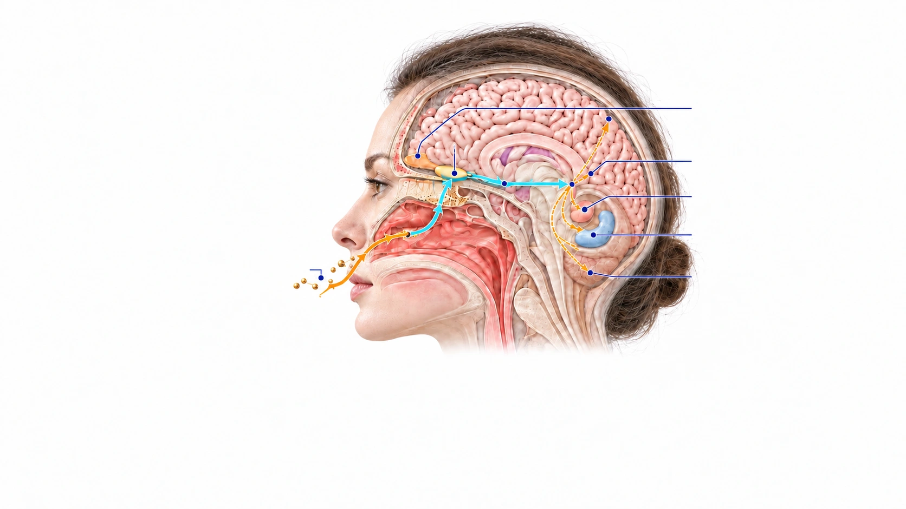
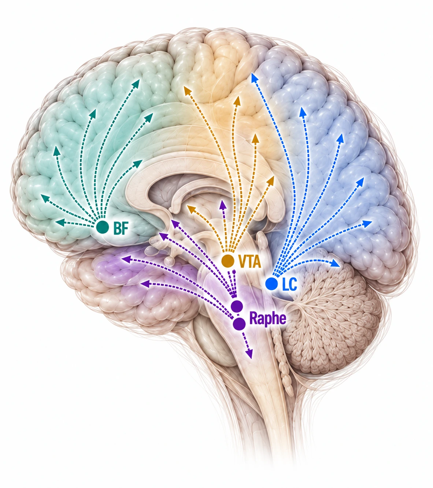
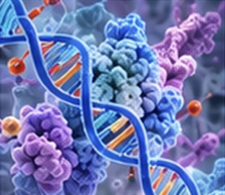
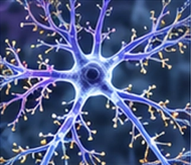
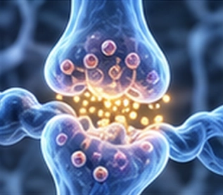
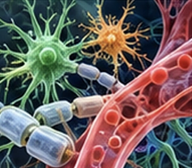

01Upstream Molecular Signaling
- Ca2+
- CaMKII
- p-CREBP
- Gene Transcription
Induction of Neurotrophic & Growth Factors
- BDNF
- NGF
- GDNF
- VEGF
- IGF-1
NEUROPLASTICITY
The brain is not a fixed network. Through experience-dependent plasticity, neural connections continually strengthen, weaken and reorganize.
A&S explores how sensory input, olfactory signaling, neuromodulatory systems and bio-responsive molecules shape the biological conditions that support learning, adaptation, homeostasis and long-term brain resilience.

Bio-responsive aromatic molecules activate receptors in the olfactory epithelium. The resulting neural signals reach the olfactory bulb and interact with cortical, limbic and homeostatic networks involved in experience-dependent plasticity.
Olfactory BulbFirst Neural Relay
Olfactory Tract
Cribriform Plate
Olfactory Epithelium
Bio-Responsive
Aromatic Molecules
Molecular Entry
Anatomical locations are atlas-referenced; pathways are simplified for conceptual clarity.
EXPLORENeuromodulatory Systems Shape PlasticityNeuromodulatory systems regulate the brain’s responsiveness to experience. Through widespread projections, they influence arousal, attention, mood, reward and memory—shaping when and how neural circuits undergo plastic change.

Anatomical locations are atlas-referenced; projection fields are simplified for conceptual clarity.
Together, these systems create the neurochemical conditions that enable neural networks to strengthen, weaken or reorganize in response to experience.
How Disruptive and Resilience-Supporting Conditions Shape Neural Adaptation




From Systemic Regulation
to Cognitive Resilience
Adaptive neuroplasticity may contribute to the regulation of stress, mood, sleep, autonomic function and learning. Over time, these interconnected processes may help preserve functional capacity and support resilience across healthy cognitive aging.
Potential research pathways—not clinical claims.